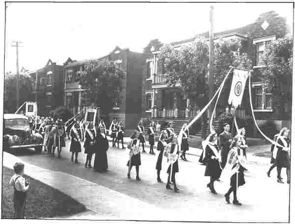

For centuries, on certain occasions, religious ceremonies were held outdoors, in front of a reposoir (a temporary wayside altar). It all began with a procession from the church to the spot chosen for the reposoir. For the Fête-Dieu (Corpus Christi) in June, for instance, the parish priest, carrying the monstrance and surrounded by his clergy and the altar boys, led the procession, followed by the local notables and the townspeople. Members of a parish organization walked together, for example the Enfants de Marie (Children of Mary, the young girls), the members of the J.O.C. (Jeunesse ouvrière catholique, Young Catholic Workers), of the J.E.C. (Jeunesse étudiante catholique, Young Catholic Students), the Dames de Ste-Anne (Ladies of St. Anne, the older women), the Knights of Columbus, the League of the Sacred Heart, the Scouts and the Guides, etc... Zouaves (papal soldiers) might also accompany the procession. Each group carried its banner and wore its costume. The place a person or a group held in the procession mattered, and could stir up rivalries.
Fête-Dieu (Corpus Christi) procession in St-Zotique parish, Montréal, in 1920 (photo from the Société Historique de St-Henri)
Everyone gathered in front of the reposoir, and the priest then performed the ceremony. The reposoir was an altar built in front of a private home. A whole set was built around the altar, in which children in costume were placed as extras. Each year one home in the parish was chosen for the reposoir, which was a great honour for the owner of the house.

Fête-Dieu procession in 1942 in Montréal (photo from the Société Historique de St-Henri)
Here are the reposoir photos from our family heritage:
REPOSOIR AT THE LAVOIE FAMILY'S
REPOSOIR ON RUE ST-PHILIPPE IN 1934
REPOSOIR IN ST-AIMÉ IN 1953